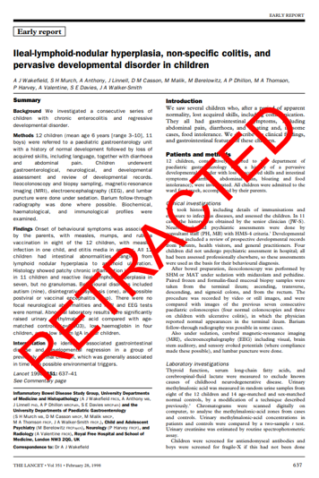

15 Crises of Replication
15.1 Reproducibility and Replication Definitions
Let’s remind ourselves what Reproducibility and Replicability mean. As you see in Figure 15.1, Reproducibility involves literally reproducing the results from a study using original data, code, and materials. Replicability is about carrying out the study using the same procedures in different settings and achieving consistent, not identical, results.
15.2 Stirrings of a Crisis
For a long time, there was concern about the replicability and reproducibility of findings in the social sciences. In 2005, physician-scientist John Ioannidis published a provocative and worrying essay entitled Why Most Published Research Findings are False, which outlined several methodological shortcomings plaguing most published research using statistics, including an over-reliance on p-values, low statistical power, and biases in study design, data collection, and analysis.
He noted that several biases in design, data analysis, and presentation factors influence the production of research findings. With greater bias in the conduct of a study, the lower the chances of the research finding being true. Additionally, the likelihood of a finding being true depends a great deal on the pre-study odds of it being true, as well as the statistical power of a study. He also points out that when a study is replicated by others in different contexts, the effect size is also likely to be smaller, and the likelihood of the finding being true is diminished.
This obviously made a lot of folks nervous, and become a highly downloaded paper. However, the concerns about replication did not truly become mainstream until one particular psychologist from Cornell published a study suggesting that humans have psychic ability…
15.3 Feeling the Future
15.3.1 An Unintentional Crisis Unfolds
In 2011, a study authored by Cornell psychologist Daryl Bem (a very respected psychologist) was published in the Journal for Personality and Social Psychology (a very respected psychology journal). The study appeared to shake the foundations of what we know about human beings. It suggested, through a series of nine experiments comprising more than 1,000 participants over ten years that humans have psychic ability!
Here’s what happened. Bem administered College students came to a computer lab, and had to look at a computer screen. He administered many experiments to see if people have an innate psychic ability to predict the future. In one experiment, participants were presented with two curtains on a screen (represented in Figure Figure 15.2 below).
They had to then guess which curtain was concealing an image. Unbeknownst to them, the image would be randomly allocated to a curtain after they had made their choice. So, if they were able to guess which curtain held the image better than a 50-50 chance (for example, say they correctly guessed 60% of the time), this would be taken as evidence of an extra-sensory perception that allows one to Feel the Future (the admittedly catchy title of the study). Notably, some of the images were ‘erotic’ in nature, while others were neutral. In eight of nine studies reported in the paper, participants were significantly likely to predict which curtain contained the image. The findings in totality provided Bem ample evidence for the anomalous phenomenon of precognition, or psychic ability to see the future.
The study became HUGE. In general, if more than ten people read your research, I would call that a win. But Bem’s study was a darling of the media. The New York Times ran a front-page story on it, and Bem even appeared on the popular comedy program The Colbert Report. Those who were already convinced of the highly questionable field of Psi research (research on paranormal phenomena) were thrilled at Bem’s study. It seemed to provide strong evidence for psychic ability using widely accepted methods in a respected journal by a respected Ivy-league professor. Bem had large enough sample sizes to be accepted by the journal (he had been the Editor previously so he knew his methods were up to snuff), used basic one sample t-tests that one learns in introductory statistics classes, and made sure his stimuli had been randomized correctly. Many began to question whether humans had psychic ability based on Bem’s findings, and I don’t blame them at all. In the words of Slate author Daniel Engber, Bem’s findings were both methodologically sound and logically insane.2
So, do humans actually have psychic ability? No. At least, we don’t actually have any convincing evidence for that notion. Others tried to replicate Bem’s findings and did not find the same effects. In fact, one large replication with 3,289 participants across seven experiments found an effect size of d = 0.04, which is statistically indistinguishable from zero. In another very thorough replication study involving 2,115 participants and ten labs from nine different countries, the researchers were unable to replicate Bem’s parapsychological effects, and found support for the notion that Bem’s statistically significant findings were pure bias in that significant findings were due to researcher and publications biases, as well as a lack of methodological rigor.3
I should note that Bem tried to dispute the findings of the skeptics with a meta-analysis of 90 studies from 33 labs across 14 countries suggesting that this findings are in fact real.4 However, given the myriad problems in the conduct and reporting of studies observed in the original study by Bem, I think it’s fair to say most academics in the field didn’t really buy these updated findings. Indeed, a breakdown of the statistics in the meta-analysis raises more questions than it answers.5 Given the replication work by non-Bem affiliated labs, and the fact that they are more recent, it’s safe to conclude that the original findings are not supported (however much some might want them to be).
15.3.2 Where Bem Went Wrong
Ok, so you may be wondering, “Well what did Bem do wrong?” He used widely accepted statistical methods, used large sample sizes, performed multiple experiments across years, and went through peer-review in a top-tier journal. It would seem he did everything right! The lesson is instructive, because you can do all of that, and still produce junk science. Bem fell prey to what we now call Researcher Degrees of Freedom - the flexibility inherent in the many decisions researchers have to make in data collection, analysis, and reporting that can result in selective practices producing spurious results.6 Engaging in researcher degrees of freedom increases the chance of false positives, or Type I errors, as well as biases in selectively reporting only findings that confirm one’s pre-existing conceptions. Here are just two researcher degrees of freedom that very likely led Bem to his spurious findings:
Bem made many tweaks to his experiments over the years in order to yield statistically significant results. He did not document many of them. If you tweak your experiments without reporting that you did so, you make it seem like you just got the result magically, and not as a result of careful manipulation. This manipulation can results in false positives, but it also weakens your conceptual theory. For example, if a study did not show evidence of psychic ability, and Bem modified the experiment, and then DID find evidence of psychic ability, what does this say about his theory of psychic ability. In this way, notice how you can get very flexible with your theory if you’re making undocumented tweaks.
There were no pre-registered replications of experiments in Bem’s original study. While we’ll get to pre-registration a bit more in detail later, the idea is simple: 1) Before you do your study, say what your going to do, why, and how; 2) publish this pre-registration in the public domain; 3) do your study and report back on the things you had planned to do. Nowadays, this is a common rigorous practice, but was not really a thing in Bem’s time. This means that after doing one experiment, Bem was free to plan, adapt, abandon, and modify his hypotheses and experimental protocols in order to yield statistically significant results. Thus, if he ran a study, didn’t find what he wanted and then abandoned the study, this would not be recorded. Selective reporting means that you could run 100 studies, and only report and publish 10 of those that are statistically significant, severely distorting the evidence base and hiding your 90% null results rate.
Bem’s own words in an interview with Slate magazine in 2017 are quite instructive:
“I would start one [experiment], and if it just wasn’t going anywhere, I would abandon it and restart it with changes,” Bem told me recently. Some of these changes were reported in the article; others weren’t. “I didn’t keep very close track of which ones I had discarded and which ones I hadn’t,” he said. Given that the studies spanned a decade, Bem can’t remember all the details of the early work. “I was probably very sloppy at the beginning,” he said. “I think probably some of the criticism could well be valid. I was never dishonest, but on the other hand, the critics were correct.”2
15.4 The Domino Effect
After the publication of Bem’s ESP paper, many began questioning the foundations of the entire field of social psychology. Researchers began trying and failing to replicate many classic findings in psychology. The subfield of priming within social psychology was one of the first fields to undergo extensive critical scrutiny, with some dire results. Many priming studies failed to replicate, and it seemed that faulty methods, lack of statistical power, researcher biases, and publication biases were responsible.
For instance, a classic study in the field of subliminal priming led by Yale psychologist John Bargh involved one experiment in which undergraduates in a lab worked on a scrambled-sentence task. That is, they were given 30 sets of five word combinations which they had to use to construct a sentence. In the treatment group, the scrambled words contained words previously identified to be related to stereotypes of the elderly: Florida, old, lonely, grey, sentimental, wise, etc. (these are from the actual study). The hidden outcome of this study was the time it took for participants to walk down a corridor to leave the study area. The results showed that those exposed to the elderly prime condition walked almost one second slower than those who were exposed to neutral words (a statistically significant result).7
Sounds pretty cool right? That’s certainly what the authors of a psychology textbook I read in college thought when they presented the results of this study as fact. Unfortunately for Bargh and his colleagues, the unintentional crisis of replication set in motion by Bem led a team to try and replicate the classic elderly prime findings. The team followed the same protocol as Bargh and his colleagues, and found no difference in walking times between the elderly and neutral prime conditions.8
Notably, the replication team used infrared sensors to automate the timing process, so it didn’t depend on a human’s use of a stopwatch. They speculated that the people manually timing the participants may have been a source of bias in the original study. They ran another experiment in which they used people to manually time participants with a stopwatch (I’ll call them the timers). They told the timers in one group that participants in the treatment group would walk faster, and they told the other half the participants in the treatment group would walk slower. Unbeknownst to the timers, infrared sensors were also measuring participants’ objective walking speeds. The results showed that when experimenters were led to believe participants would walk slower as a result of the intervention, the walking times were significantly higher in the Prime condition compared to the Neutral condition. Interestingly, when experimenters were led to believe that participants would walk faster as a result of the intervention, the walking times were significantly lower in the Prime condition compared to the Neutral condition. The results suggest that priming effects may reflect experimenter bias, rather than an actual induced effect of a prime stimulus on participants.
I should note that some of Bargh’s other priming studies have also failed to replicate.9 For his part, Bargh dismissed the replication of his elderly prime study, and responded to the replicators with many objections to their replications as well as a scathing personal attack on them.10
It seems that 2011 was a watershed moment in the history of reproducibility and replication. A few key moments are worth mentioning. First, just about two months after The New York Times reported on Bem’s ESP study, a group of researchers submitted a study for publication entitled False-Positive Psychology: Undisclosed Flexibility in Data Collection and Analysis Allows Presenting Anything as Significant.6
This paper demonstrated with real experimental data how easy it was to achieve statistical significance for an impossible hypothesis. In their study, the authors experimentally demonstrate that listening to the song When I’m Sixty-Four by the Beatles, compared to the song Kalimba which came free with Windows 7, actually MADE participants younger. Think about that for a second. Obviously, listening to any song might make you feel younger or older, but the outcome I mean here is actual chronological age measured by one’s birth date. Even though the premise that listening to the Beatles will make you younger is obviously false, the authors show, with standard statistical methods, that it is possible to achieve a statistically significant result supporting the impossible claim at p < .05. There was no magic associated with this finding, it was achieved deliberately by engaging in researcher degrees of freedom such as using multiple dependent variables but reporting only the covariates that resulted in statistical significance, analyzing data before all data were collected, and not using a rule for when to stop collecting data.
As the field of priming research began to come into question, prominent psychologist Daniel Kahneman wrote an open letter to Bargh and others in the field of priming studies asking them to clean up their act. The entire letter can be found in Appendix G. The letter is prescient and instructive. Kahenman correctly predicting a train wreck looming which became the Replication Crisis, and his proposal to have a daisy chain setup of different labs replicating the same effect foreshadowed many large replication efforts to come.
Kahneman was not and is not a priming researcher, but he had some skin in the game vis-à-vis a popular book he published in 2011 entitled Thinking Fast and Slow which went on to become a New York Times bestseller. The book was a popular psychology piece in which Kahneman reviewed some of his major findings, as well as those of others, some of whom included priming researchers. As the replication crisis unfolded, it became apparent that many of the chapters referenced studies which later failed to replicate, his fourth chapter representing the chapter most riddled with references to spurious studies.11
To his credit, Kahneman provided a thoughtful response to a blog scrutinizing the shaky studies he cited in his book. Kahneman replied as a comment to the blog admitting that he placed too much faith in underpowered studies, despite having published a paper previously about how researchers are often reliant on underpowered studies.
The case of Kahneman, a prominent researcher who knew well enough the dangers of relying on small sample sizes, falling prey to the very thing he had critiqued is illustrative of the importance of evidence-based rather than eminence-based practice. It also showed the extent of the problem. Even Nobel Prize winners could make mistakes in promoting weakly supported or spurious findings.
The replication crisis was not confined to priming studies, nor to the field of psychology alone. The crisis became evident in fields such as economics, cancer biology, finance, artificial intelligence, nutrition, and more. Indeed, it continues to this day, as more and more fields are critically scrutinizing key findings.
15.5 Gauging the Extent of the Damage
The replication crisis has resulted in major efforts to replicate key findings across different fields. This process continues to unfold, but we can examine some salient examples.
15.5.1 The Open Science Collaboration
A huge replication study was convened by a group called the Open Science Collaboration involving 270 scientists from 17 countries, who selected 100 studies published in 2008 from top-tier psychology journals.12 Of the 100 studies, 97 had a finding that was statistically significant at the 5% level (p < .05), and of the replications 35 of 97 studies had a finding at p < .05. The replication study effects were also about half as big as the original study effects. The distribution of original study effect sizes and replicated study effect sizes in presented in Figure 15.3.

This was a massive effort that took four years to painstakingly gather data and replicate these experiments. The fact that about two-thirds of findings published in top-tier psychology journals did not replicate was concerning to many who took these findings as well-established. What did it mean for other findings? What did it mean for the entire field of psychology? Could other fields be affected?
15.5.2 Questionable Research Practices in Psychology
To better understand the extent of Questionable Research Practices (QRPs; researcher degrees of freedom) in psychology, a group of researchers surveyed over 2,000 academic psychologists at major US universities.13 Respondents were asked about a) whether they had engaged in a number of QRPs (self-admission rate), b) the percentage of other psychologists they believed had engaged in the QRP (prevalence estimate), and c) the percentage of psychologists committing QRP who would admit to doing so. The main results are presented in Figure 15.4.
As we see, even with a select sample of psychologists, many admitted to engaging in QRPs. We can imagine that the self-admission rate represents a potential underestimate of the true extent of the problem.
15.5.3 Many Labs 2
Imagine you replicate a study and find that the effects are different from the original. Immediately, the original authors may say that your protocol deviated from the original study, explaining the discrepancy in effect. To address this issue, a team carried out replications of 28 findings in psychology using protocols that were peer reviewed in advance.14 Each protocol was administered on about 15,305 participants from 36 countries and territories. So, this was a series of high-powered replications. Remember that statistical power relates to having the ability to detect an effect if it’s actually there.
The team found that just 15 of 28 findings replicated in the same direction as the original at p < .05. Of these, 75% of the replicated findings were smaller than the original study effect. The authors concluded that the variation in effect sizes had more to do with the effect being studied than the sample or setting of the study.
15.6 Retractions
15.6.1 What is it, and Why Does it Happen?
A journal will retract a paper when it removes a paper from its records that it already published. Retractions do not occur over small issues like typos. It’s usually something quite seriously wrong about the paper or the peer review process. Usually, retractions occur due to major errors in the research, plagiarism, data falsification, or something else quite serious. Authors can self-retract if they later discover a serious error in their work, and that’s a very laudable thing. However, quite often retraction decisions are made by the editor or editorial board of the journal.
Lack of reproducibility is usually not grounds for retraction on its own. Consider the Bem ESP study. Since its publication, we now have a pretty decent understanding of Bem’s spurious results, including testimony from Bem himself in committing what we now call researcher degrees of freedom. However, when the editor of the Journal of Personality and Social Psychology was asked to retract the study in 2018, it took him two years to respond to the letter and inform the requester that the paper would not be retracted. Thus, it’s not a done deal even when you have a false hypothesis, evidence of bad research practice, and a lack of reproducibility.
That being said, as editors have become more aware of the many issues with research misconduct, and with the growth of plagiarism detection software, the number of retractions across all of science have risen many fold. In the year 2000, there were about 100 retractions annually across all of science; in 2014 that number grew to 1,000; and in 2022 it was up to about 3,600.16 17 The largest and most comprehensive database of retractions (and one of my favorite websites) is Retraction Watch. If you’re reading this, stop reading right now and click on the link and check out Retraction Watch (consider also making a tax-deductible donation if you like the vibe).
So, why are so many papers being retracted? Though the graphic in Figure 15.6 is a little older, it is still instructive.
Plagiarism from other papers or even from one’s own previously published papers is one of the main culprits of retraction. Importantly, fake peer review has also been a driving factor behind retractions. Fake peer review happens when an author gives a journal an email address ostensibly as the contact for a potential reviewer, but in reality they control the email address. This means that they can control their own peer review, which defeats the purpose of the whole exercise. Figure 15.7 is what it can look like like when a paper is retracted because the editor discovered that the peer review process had been manipulated.

15.6.2 Life After Death: Continued Citations Despite Retraction
Bad papers are being retracted at an increasing pace. That’s good, right? Yes. But, there is another problem. Many papers continue to be cited even years after they’ve been retracted, and most of the citations don’t mention that the paper has been retracted. Let’s look at the top five of the most highly cited retracted papers from Retraction Watch’s database, shown in Table 15.1.18
| Article title, journal, and year | Year of retraction | Citing articles before retraction | Citing articles after retraction | Total citations |
|---|---|---|---|---|
|
2018 | 1,905 | 950 | 2,855 |
| 2010 | 643 | 940 | 1,583 | |
| 2007 | 232 | 1,232 | 1,464 | |
| 2015 | 895 | 421 | 1,316 | |
| 2020 | 977 | 105 | 1,082 |
Do you see how entries 2 and 3 have more citations after being retracted, than they did before retraction? That’s a problem! Additionally, entry 2 is fraudulent study claiming that vaccines cause autism. While this study has been thoroughly debunked, it has fueled the anti-vaccination movement, and its effects continue to be seen today. In this way, research misconduct does not just affect science, but can have massive downstream effects upon society, and the health and well-being of many.
Retraction does appear to decrease citation frequency, but not by as much as we might like. One study examined compared the citation counts for 3,000 retracted papers to 3,000 non-retracted papers.19 They found that retraction decreased citation frequency by about 60%, and that many retracted papers continued to be cited.
On February 21, 2010 American anesthesiologist Scott Reuben formally pled guilty to one count of health care fraud. He was sentenced to six months in prison, followed by three years of supervised release. He also had to pay a $5,000 fine, forfeit $50,000 to the government, and make restitution to pharmaceutical companies he had defrauded to the tune of $360,000.
Reuben was formerly a professor of anesthesiology and pain medicine at Tufts University. He admitted to having faking data underlying his research, and lied about conducting 21 clinical trials. The fake results from these trials were published in many journals. When he was outed as a fraud, his publications had been cited almost 1,200 times, and his work was quoted in clinical guidelines. An analysis of his published work in 2014 revealed that 45% of his retracted articles had been cited at least once, and of these, only a quarter correctly mentioned the work as being retracted. Thus, even five years after his articles were retracted, they were still being quoted and cited.20
Reuben was also able to slip past peer review and maintain fraudulent practices for 13 years, and wasted millions of dollars of funding. Consider also the impact his bogus findings had on the field of anesthesiology. At the time of the scandal, the editor-in-chief of the journal Anesthesia and Analgesia said of Reuben’s articles:
We are left with a large hole in our understanding of this field. There are substantial tendrils from this body of work that reach throughout the discipline of postoperative pain management. Those tendrils mean that almost every aspect will need to be carefully thought through. What do we still believe to be true? Do the conclusions hold up to scrutiny?21
You may be wondering, why do people cite retracted studies? It’s usually not to call them out as retracted. The reality is that most folks don’t care to check or don’t know that a study is retracted. Retraction notices on journals also vary widely, with some being more salient than others. Let’s have a look at some retraction notices.
First up, we have the prestigious New England Journal of Medicine in Figure 15.8. This isn’t a great retraction notice because it’s just a narrow banner. These days, someone might mistake it for a pop-up about cookies, which has become ubiquitous. If someone downloads this in a hurry, I would worry that they might not see the notice.
Next, we’ve got Science in Figure 15.9. This one is bit more prominent, but could still be missed by someone in a hurry. We may also wonder, why not splash it against the title of the study?
Finally, my favorite one so far is the retraction notice of the Lancet, shown in Figure 15.10. This is nice! It’s a huge notice splashed against the entire page. You cannot miss it. To me, this is the gold standard of retraction notices.

Despite journal websites having retraction notices, some may still not be aware of the retractions because they might have downloaded the paper earlier pre-retraction. Thus, they might not need to ever visit the paper’s journal page, and may miss the retraction notice.
This is a big problem related to continued citation of retracted papers. One excellent solution to the problem exists IF you use Zotero for reference management. Zotero is a free reference management software, and now partners with Retraction Watch. This means that if a paper is in Retraction Watch’s database, it will show up as retracted in your Zotero. In Figure 15.11 you can see a screenshot of my Zotero, showing two papers that were retracted. The panel on the right explains why it was retracted, and a simple red cross gives me a quick indication that these papers have been retracted.